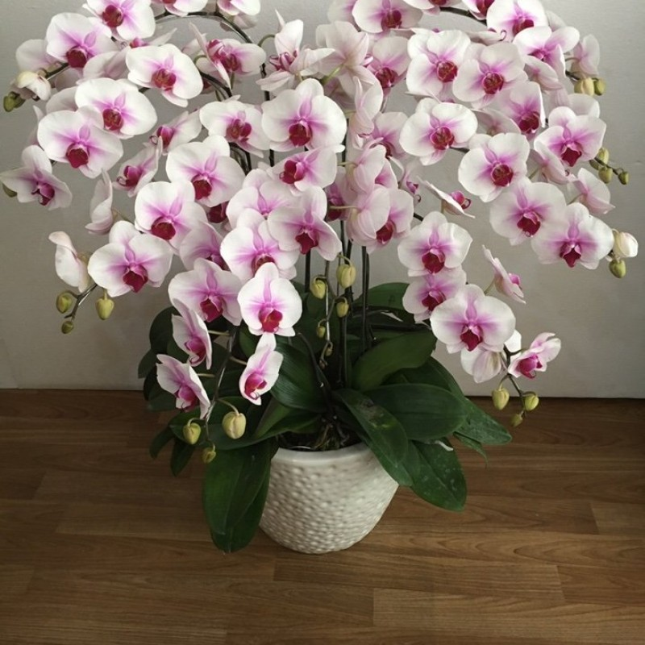

Hoa lan hồ điệp

Thực chất, loài hoa hoang dã này có kỹ thuật trồng cây và chăm sóc không quá khó như nhiều người vẫn nghĩ. Lan hồ điệp (tên khoa học là Phalaenopsis) thuộc họ lớn nhất trong vương quốc các loài cây, họ lan Orchid Orchidaceae, có nguồn gốc từ Đông Nam Á, Philippines và Australia